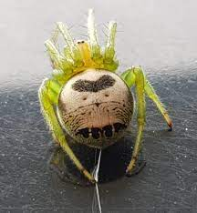

Araneus mitificus
Family name: Araneidae
Common name: Kidney Garden Spider
Genus: Araneus
Species: A.Mitificus
Sex: Female
Araneus mitificus belongs to the genus Araneus. It is classified under the subfamily Araneinae of the orb-weaver spider family Araneidae. They are members of the superfamily of eight-eyed spiders Araneoidea of the suborder Araneomorphae. The species was originally described in 1886 as Epeira mitifica by the French arachnologist Eugène Simon.
Argiope anasuja

Family name: Araneidae
Commonname: Signature Spider
Genus: Argiope
Species:A.anasuja
Sex: Female
Araneus mitificus belongs to the genus Araneus. It is classified under the subfamily Araneinae of the orb-weaver spider family Araneidae. They are members of the superfamily of eight-eyed spiders Araneoidea of the suborder Araneomorphae. The species was originally described in 1886 as Epeira mitifica by the French arachnologist Eugène Simon.
Araneus mitificus

Familyname:Araneidae
Commonname: Signature Spider
Genus: Argiope
Species: A.keyserlingi
Sex: Male
Araneus mitificus belongs to the genus Araneus. It is classified under the subfamily Araneinae of the orb-weaver spider family Araneidae. They are members of the superfamily of eight-eyed spiders Araneoidea of the suborder Araneomorphae. The species was originally described in 1886 as Epeira mitifica by the French arachnologist Eugène Simon.
Cyclosa Sp.

Familyname:Araneidae
Commonname:trashline orbweavers
Genus:Cyclosa
Species:sp
Sex: Male
Cyclosa spiders, belonging to the family Araneidae, are renowned for their remarkable web-building abilities and intricate camouflage strategies. These spiders, with small to medium-sized bodies and flattened abdomens, display a range of colorations and markings that often mimic debris or plant material, enabling them to blend seamlessly into their surroundings. They construct orb-shaped webs, often incorporating bits of debris or prey remains into the web structure, further enhancing their camouflage. Cyclosa spiders are adept at remaining hidden while waiting for prey, using their camouflaged appearance to evade detection by predators. Their unique adaptations highlight their remarkable ability to thrive in diverse environments, where their stealth and camouflage play critical roles in their survival.
Cyclosa Sp.

Familyname:Araneidae
Commonname:garden tent-web spider
Genus:Cyrtophora
Species:C. cicatrosa
Sex: Female
Cyrtophora cicatrosa is known for its unique web-building behavior and distinct appearance. These spiders typically construct large, complex orb webs characterized by a horizontal, disc-shaped hub and irregularly spaced radii. The web often includes a conspicuous central stabilimentum, a dense zigzag pattern of silk, which may serve structural or defensive functions. Cyrtophora cicatrosa individuals have elongated bodies and relatively long legs, with coloration varying from pale yellow to brown, often with darker markings. They are primarily found in tropical and subtropical regions, where they inhabit vegetation-rich habitats such as forests, gardens, and shrublands. As nocturnal predators, they prey upon small insects and other arthropods that become ensnared in their webs.
Cyclosa Sp.

Familyname:Araneidae
Commonname:tropical tent-web spider
Genus:Cyrtophora
Species:C. cicatrosa
Sex: Female
Cyrtophora citricola is commonly known as the Tropical Tent-web Spider. These spiders are notable for their distinctive web-building behavior, as they construct large, tent-like structures composed of silk. The web typically consists of a horizontal, disc-shaped hub with radiating spokes, leading to a surrounding tent-like structure formed by irregularly spaced silk threads. The central hub often contains a conspicuous stabilimentum, a dense zigzag pattern of silk that may serve structural or defensive purposes. Cyrtophora citricola individuals have elongated bodies and relatively long legs, with coloration ranging from pale yellow to brown, often with darker markings. They are primarily found in tropical and subtropical regions, where they inhabit vegetation-rich habitats such as forests, gardens, and agricultural areas. As nocturnal predators, they feed on small insects and other arthropods that become ensnared in their webs.